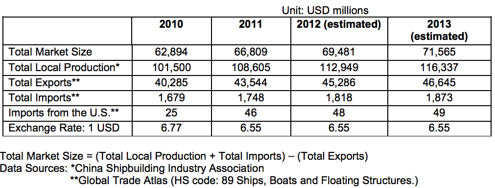

Return to top

This section covers the use and development of the various sea-related industries, including shipbuilding, ports, pleasure boats, sea communications and transportation, offshore oil and gas, sea-related chemicals and sea fisheries.
China has seen rapid development of its marine industry over the past few years. China has more than 3 million square kilometers of water territory and 32,000 kilometers of coastline, with more than 1,400 harbors and 210,000 cargo ships. As the world's largest exporter, China has become a center of maritime activity, and China's major state-owned shipping and shipbuilding companies are among the worlds largest. According to the Ministry of Land and Resources of the People's Republic of China, the marine industry will gradually become one of the pillars of China's economy.
According to the statistics of Global Trade Atlas, China's total value of ship imports and exports reached $41.9 billion in 2010, of which ship imports accounted for $1.68 billion. Trade volume could reach a historic high of approximately $45 billion in 2011. However, oceanic pollution and the industry's structural imbalances, currency appreciation and cost increases continue to present challenges for the development of the marine industry.
Return to top
Best prospects in China's marine industries include shipbuilding and related accessories, recreational marine, and port related accessories and sea transportation.
Chinese shipbuilding deliveries and orders have experienced fast growth for seven consecutive years, and China is currently ranked second in the world in both categories. According to statistics from the China Shipbuilding Industry Association, China's shipbuilding output was 65.60 million deadweight tons (DWT) in 2010, rising 55 percent from 2009. According to statistics issued by Clarkson, a UK consultant, Chinese shipbuilding deliveries were 61.77 million DWT from January to November of 2011, with an increase of 8.8 percent compared with the same period in 2010. New ship orders were 75 million DWT in 2010, which was up 189 percent compared with the same period in 2009. The market share of Chinese shipbuilding output, new ship orders and ship orders in hand respectively accounted for 41.9 percent, 48.5 percent and 40.8 percent of world totals in 2010. (Source: Analysis on China’s Shipbuilding Industry by China Shipbuilding Industry Association)
The country plans to build three major shipbuilding bases in the Bohai Gulf area, East China Sea and South China Sea. When completed in 2015, the Changxing base will be the largest shipyard in the world with annual shipbuilding capacity reaching 8 million tons.
In February 2009, China's State Council approved a revitalization plan for the Chinese shipbuilding industry. According to the plan, the government will encourage financial institutions to expand financing to purchasers of ships and extend financial support for domestic buyers of long-range ships until 2012. The plan will also support the industry by stabilizing production, growing domestic market demand, developing marine engineering equipment, supporting consolidation of the industry through mergers and acquisitions, as well as technical innovations.
China needs high-technology, machinery and management tools for the shipbuilding industry. The best prospects for shipbuilding include: raw materials, coating equipment and coating materials; computer aided design (CAD) software and associated technologies for ship design and construction, equipment maintenance, Global Positioning Systems (GPS), navigation and on-board computer systems, and cutting and welding technology and related equipment. China has routinely sought foreign design support for large marine engineering projects, but to date has relied heavily on European and Asian firms. With marine engineering projects a targeted area of growth in the industry revitalization plan, and with U.S. expertise in offshore energy projects, there will be increasing opportunities for U.S. design firms in this segment.
With rapid economic growth, China's recreational marine market is forecast to expand sharply in the coming years. In 2010, China imported over $90 million worth of yachts and pleasure vessels, which was an increase of 133 percent compared with 2009 (Source: Global Trade Atlas). Based on the confidence that pleasure boats will become one aspect of the country's expanding upper and middle-class lifestyle, provincial governments, property developers and boat builders are all investing heavily in this industry. Business experts estimate that the market will pick up speed in the next few years, and the overall market size may reach $10 billion over the next decade, which presents significant opportunities for the export of U.S. pleasure boats, accessories, marina planning and construction materials (Source: China Boat Industry and Trade Association).
Although there are presently only a handful of marinas in China, dozens more are under construction or in the planning process. Many luxury residences in major cities incorporate waterways and boating facilities in their developments. The Shanghai government has decided to build marinas and cruise ship centers along the downtown riverfront as part of the efforts to remake Shanghai into a world-class city. Other cities and areas that either have on-going marina projects, or are in the planning process include Zhoushan, Qingdao, Dalian, Ningbo, Beihai, Dongguan, Shengzhen and Hainan Island.
China is allocating significant capital for port and waterway construction to meet significant growth in freight volume. Since 2004, China has stepped up its construction of ports with 467 berths built or rebuilt in 2010. China's port flow is increasing at exponential rates, reflecting foreign trade growth. Eight ports in mainland China, namely Shanghai, Shenzhen, Qingdao, Tianjin, Guangzhou, Xiamen, Ningbo and Dalian, are included among the 30 top container harbors in the world. In 2010, the cargo turnover of all ports in China exceeded 8.9 trillion tons, rising 16.7 percent from 2009, and container throughput reached 146 million TEU which was an annual increase of 19.4 percent. The port of Shanghai is by far the busiest in the world. The cargo turnover of Shanghai port exceeded 650 million tons and container flow reached 29 million twenty-foot equivalent units (TEU) in 2010. Both of these two indexes have surpassed Singapore, making it the world's largest port (Source: China Ports Year Book 2011).
To facilitate global trade, most ports in China are placing emphasis on expanding capacity, upgrading port facilities, and modernizing operations. The products and technologies in high demand are vessel traffic management information systems, laser-docking systems, terminal tractors, dredging equipment and security equipment for ports and vessels to enable them to comply with the International Ship and Port Security Code (ISPS).
China is building more deep-water berths to handle the larger fifth and sixth-generation container vessels. The largest project is the construction of Yangshan deep-water port, approximately 20 miles offshore from Shanghai and linked to the mainland by a 32.5-kilometer causeway bridge. The master plan calls for the completion of 50 berths by 2020, which will cost over $10 billion. It also includes a logistics park and new harbor city on the mainland. Lianyungang, a northern port city in Jiangsu Province, is racing to build an international port after winning State Council approval to construct a 300,000 DWT deepwater channel and a 300,000 DWT berth for handling crude oil and ore, in conjunction with development of the neighboring Yangshan Deep Water Port in Shanghai and the existing Ningbo Port.
Return to top
China's marine equipment industry currently lags behind the shipbuilding industry. Equipment that is in high demand includes machinery, key electric-mechanical equipment, communications systems, diesel engine crank-shafts and their key components, high-powered diesel engines, ship superstructures, products that facilitate the deep-sea operation of ocean exploration ships, high-grade steel plates and section bars, and environmentally friendly paint. Other potential prospects for shipbuilding can be seen in markets for coating equipment, computer-aided design software and associated technology for ship design and construction, equipment maintenance, high-tech equipment (such as GPS, navigation and on-board computer systems), cutting and welding technology, and related equipment.
Pleasure boats are one of the best prospects for exporters. China's recreational marine industries are poised to expand rapidly in the coming years. Confident that pleasure boats will become incorporated into the lifestyle of China's growing wealthy class, provincial governments, property developers and boat builders are all investing heavily in this expanding industry, presenting significant opportunities for U.S. exporters of pleasure boats, accessories, marina planning services and construction materials.
Return to top
http://www.shipbuilding.com.cn